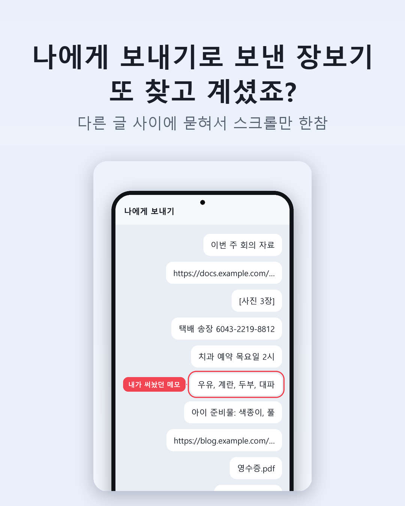
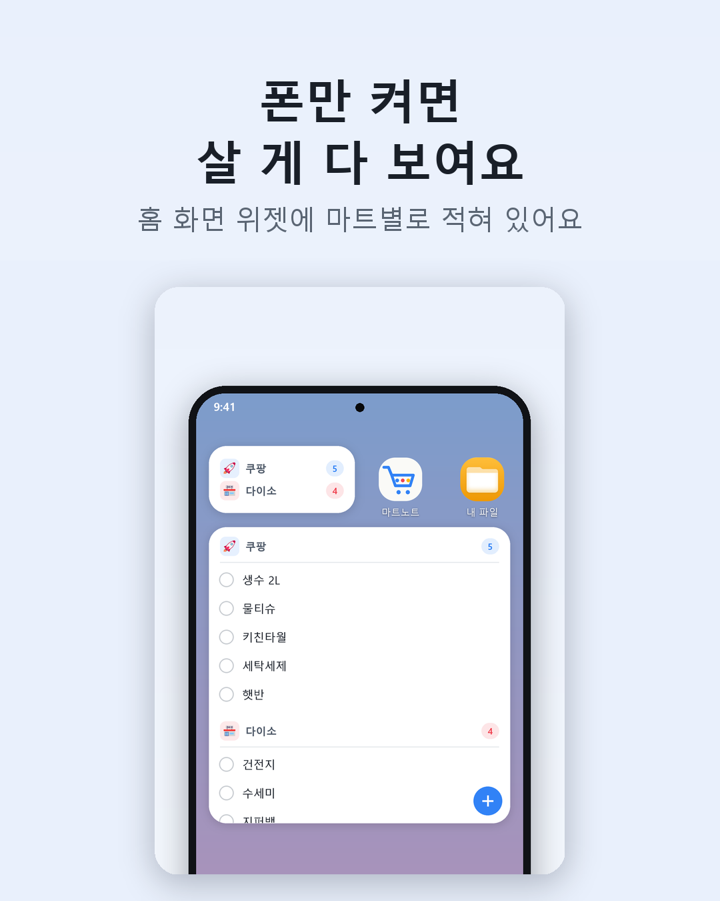
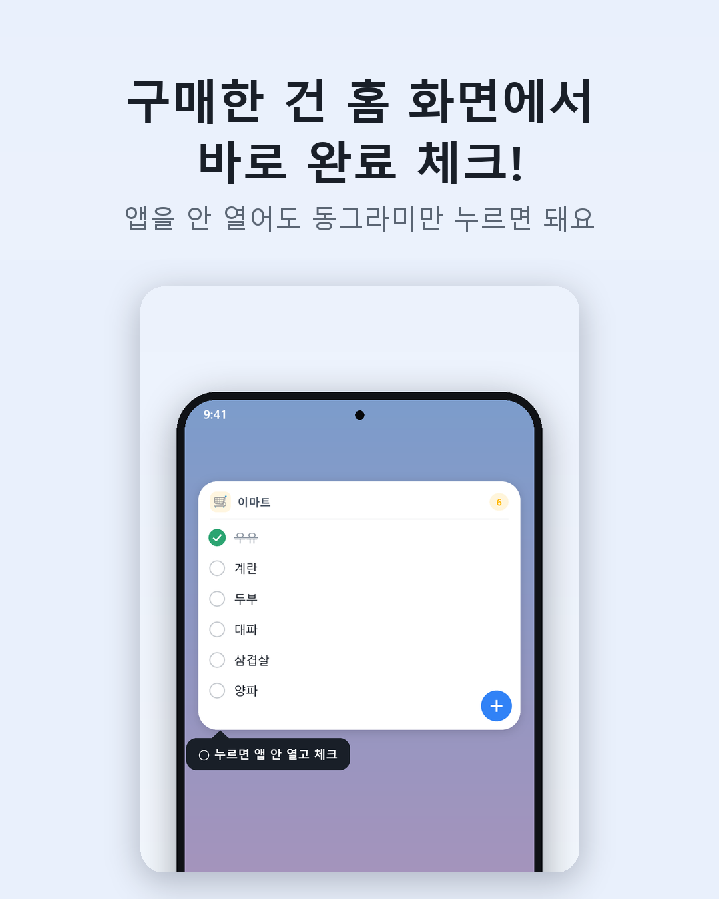
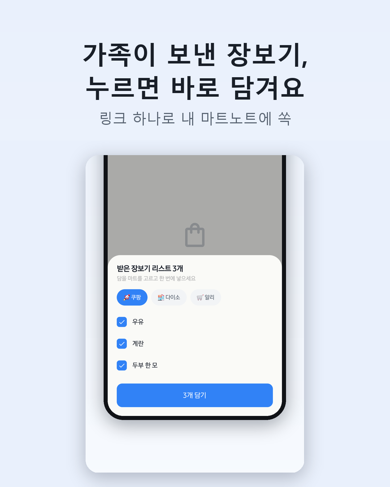
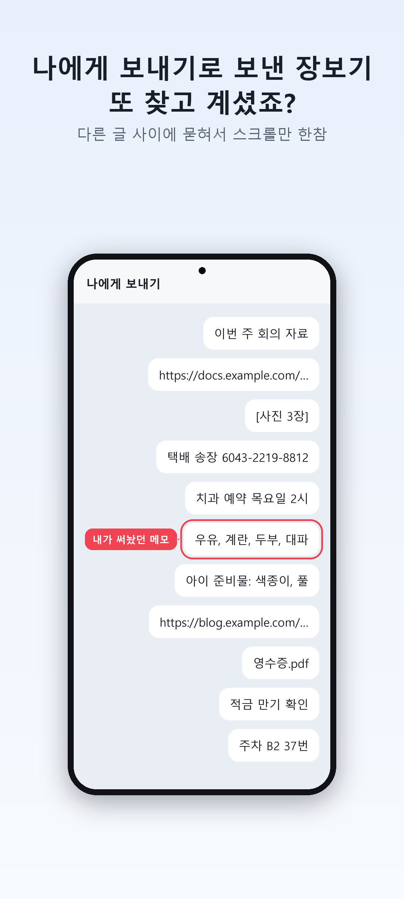
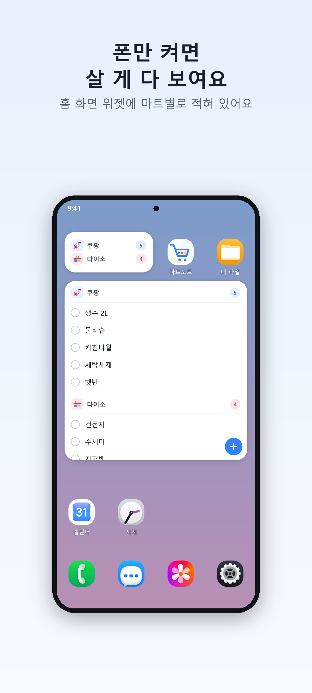
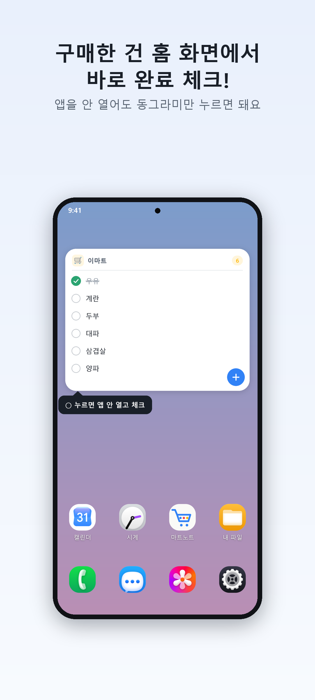
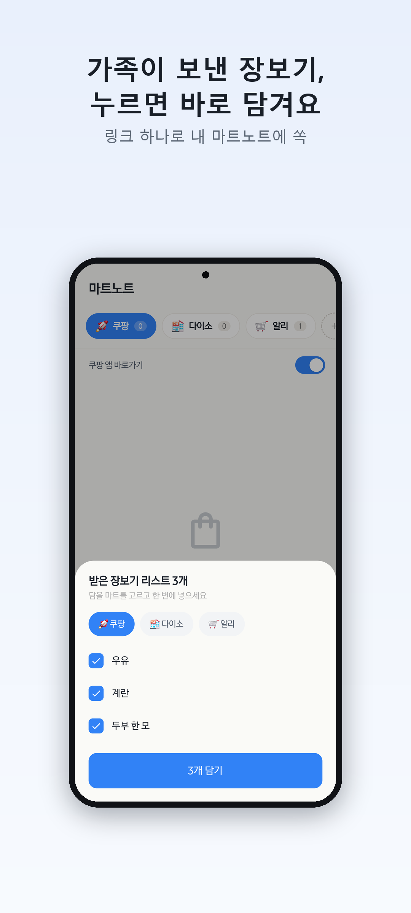
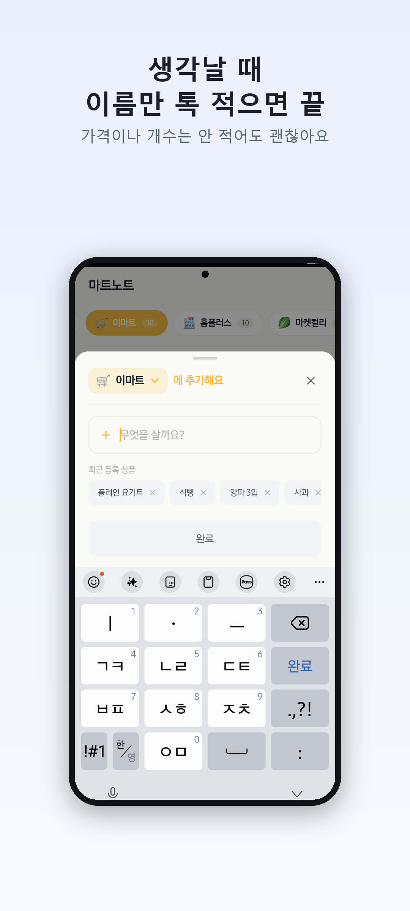
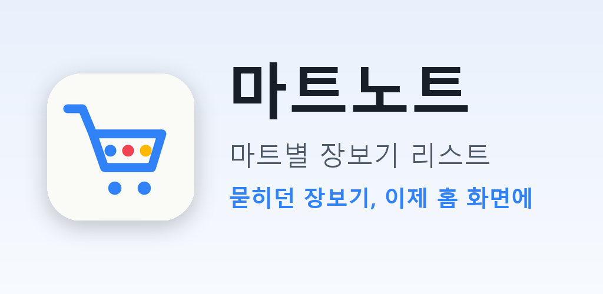

마트노트 홍보 글 모음
채널마다 [복사] → 붙여넣기. 이미지는 오른쪽 클릭 → 이미지 저장(또는 아래 ‘원본’ 링크). [이미지: …] 표시는 그 자리에 해당 이미지를 넣으라는 뜻이에요.
디스콰이엇
disquiet.io → 글쓰기(프로덕트 소개 / 메이커 로그) · 이미지 2~3장
메이커들이 보는 곳이라 "왜 만들었는지 + 뭘 일부러 뺐는지"가 반응이 좋아요. 마지막에 피드백 부탁을 꼭 넣기.
카톡 나에게 보내기에 장보기 적다가 지쳐서, 장보기 메모 앱을 만들었어요
틈틈이 혼자 안드로이드 앱을 만들고 있어요. 이름은 마트노트예요. 시작은 진짜 별거 아니었어요. 살 게 생기면 카톡 나에게 보내기에 "우유, 계란, 휴지" 이렇게 적어두는데, 막상 마트 가서 열어보면 그 사이에 링크, 사진, 택배 송장번호가 잔뜩 쌓여 있더라고요. 위로 한참 올려서 찾다가 결국 몇 개 빼먹고 오고요. 쿠팡에서 살 거랑 다이소에서 살 거가 한 줄에 섞여 있는 것도 은근 불편했어요. [이미지: 01 나에게 보내기에 묻힌 메모] 그래서 딱 두 가지만 되게 만들었어요. 1. 마트별로 따로 적기. 쿠팡 / 다이소 / 이마트 탭이 나뉘어 있어요. 2. 폰 홈 화면에 붙여두기. 위젯에서 동그라미 누르면 앱 안 열고 바로 체크돼요. [이미지: 02 홈 화면 위젯] 만들면서 제일 오래 고민한 건 '뭘 안 넣을까'였어요. 장보기 앱을 찾아보면 가격, 수량, 가계부, 레시피까지 다 들어 있는데, 저는 그냥 살 거 적고 지우는 게 전부라서요. 그래서 이름만 적게 했어요. 가격 칸도, 수량 칸도 없어요. 최근에 하나 더 넣은 건 가족끼리 목록 주고받기예요. 목록을 카톡으로 보내면 링크가 같이 가는데, 받은 사람이 그 링크를 누르면 자기 마트노트에 그대로 담겨요. 같은 걸 두 번 보내도 겹치는 건 빼고요. [이미지: 04 받은 목록 담기] 아직 설치가 50명 남짓이라 쓰다가 불편한 점 말해주시면 정말 큰 도움이 돼요. 아이폰 버전은 아직 없어요 ㅠ https://play.google.com/store/apps/details?id=com.rldjrgo.grocerynote
GeekNews · Show GN
news.hada.io → 글 등록 → 제목 앞에 "Show GN:" · 링크는 Play 스토어 주소 · 이미지 없음(텍스트만)
개발자들이라 기술 이야기(서버 없이 링크로 목록 전달, 위젯에서 겪은 문제)를 넣으면 댓글이 달려요. 짧고 담백하게.
Show GN: 마트노트 – 마트별로 나눠 적고 홈 화면 위젯에서 바로 체크하는 장보기 메모 (안드로이드)
https://play.google.com/store/apps/details?id=com.rldjrgo.grocerynote
카톡 나에게 보내기에 장보기 목록을 적어두면 다른 메시지에 묻혀서 매번 스크롤로 찾게 되는 게 싫어서 만들었습니다. - 마트별 탭으로 목록 분리 (쿠팡, 다이소, 이마트 …) - 이름만 입력 (가격·수량·메모 없음, 일부러 뺐습니다) - 홈 화면 위젯 2종: 목록 위젯은 ○ 누르면 앱을 열지 않고 체크, 개수 위젯은 마트별 남은 개수 - 항목 옆 🔍 누르면 그 마트 쇼핑 앱 검색 결과로 이동 (쿠팡, 컬리, 11번가, 알리 등) - 가입 없음, 데이터는 기기 안에만 만들면서 재미있었던 부분 - 가족에게 목록을 보낼 때 링크를 붙이는데 서버가 없습니다. 목록을 URL의 # 뒤에 base64로 넣고, GitHub Pages 정적 페이지가 안드로이드면 intent:// 로 앱을 열고(없으면 Play 스토어), 아이폰이면 목록만 보여줍니다. # 뒤는 서버로 전송되지 않아서 목록이 어디에도 남지 않아요. - 위젯은 Jetpack Glance로 만들었는데, LazyColumn을 한 위젯에 2개 넣으면 일부 런처에서 위젯이 아예 안 그려지는 문제가 있어서 스크롤 목록은 하나로 합쳤습니다. - 릴리스 빌드에서 R8이 WorkManager 쪽 생성자를 지워서 위젯이 늘 미리보기 그림만 보이던 버그를 한참 못 찾았던 적이 있습니다. keep 규칙 하나로 끝났는데 찾는 데 한참 걸렸네요. Kotlin, Jetpack Compose, Glance, Room 입니다. 피드백 환영합니다.
네이버 블로그
제목에 검색어(장보기 앱, 장보기 메모, 장보기 리스트)를 넣었어요 · 이미지 5장 · 태그도 아래에
네이버에서 "장보기 앱 추천"을 찾는 사람이 보는 글이라, 내가 왜 이렇게 쓰는지 생활 이야기처럼 쓰면 좋아요. 본문 붙여넣은 뒤 [이미지] 자리에 사진을 넣으세요.
장보기 앱 찾다가 결국 직접 만든 장보기 메모 앱, 마트노트 (마트별 장보기 리스트 + 홈 화면 위젯)
저는 장 볼 게 생기면 늘 카톡 나에게 보내기에 적어뒀어요. "우유, 계란, 휴지, 대파" 이렇게요. 근데 이게 마트 가서 꼭 문제가 되더라고요. 나에게 보내기에는 장보기만 있는 게 아니라 회의 링크, 사진, 택배 송장번호, 병원 예약 시간까지 다 섞여 있잖아요. 마트 카트 앞에서 위로 쭉쭉 올리면서 찾다가, 결국 한두 개는 꼭 빼먹고 와요. [이미지: 01] 쿠팡에서 시킬 거, 다이소 가서 살 거, 동네 마트에서 살 거가 한 메모에 다 섞여 있는 것도 불편했고요. 다이소 갔는데 쿠팡에서 시킬 생수가 목록에 같이 있으면 헷갈리더라고요. 그래서 장보기 앱을 몇 개 깔아봤는데, 대부분 가격이나 수량, 가계부까지 적게 되어 있어서 저한테는 너무 많았어요. 저는 그냥 살 거 적고, 산 거 지우면 끝이거든요. 결국 직접 만들었습니다. 이름은 마트노트예요. ■ 마트별로 따로 적어요 쿠팡, 다이소, 이마트처럼 마트마다 탭이 따로 있어요. 다이소 가면 다이소 탭만 보면 돼요. 마트는 원하는 만큼 추가할 수 있고 색깔로 구분돼요. ■ 홈 화면에 붙여두면 앱 안 열어도 보여요 제가 제일 많이 쓰는 기능이에요. 폰 홈 화면에 위젯으로 붙여두면 폰 켤 때마다 살 게 보여요. [이미지: 02] ■ 산 건 동그라미만 누르면 끝 위젯에서 동그라미를 누르면 앱을 안 열어도 바로 체크돼요. 장 보면서 하나씩 누르면 목록이 줄어드는 게 은근 기분 좋아요. [이미지: 03] ■ 가족이 보낸 목록, 누르면 바로 담겨요 가족한테 "이거 사 와" 하면서 목록을 카톡으로 보내면 링크가 같이 가요. 받은 사람이 마트노트를 쓰고 있으면 링크 누르는 순간 자기 목록에 그대로 담겨요. 같은 걸 두 번 보내도 이미 있는 건 빼고 담아줘요. [이미지: 04] ■ 이름만 적으면 끝 가격, 수량 같은 건 일부러 없앴어요. "라면" 이렇게 이름만 적으면 돼요. 자주 사는 건 아래에 떠서 눌러서 바로 담을 수도 있고, 말로 추가하는 버튼도 있어요. [이미지: 05] 아직은 갤럭시(안드로이드)만 있어요. 아이폰 쓰시는 분들껜 죄송해요 ㅠ 플레이스토어에서 '마트노트'로 검색하시거나 아래 링크로 받으실 수 있어요. https://play.google.com/store/apps/details?id=com.rldjrgo.grocerynote 써보시고 불편한 점 댓글로 남겨주시면 다음 업데이트에 반영할게요!
#장보기앱 #장보기메모 #장보기리스트 #장보기목록 #쇼핑리스트 #마트장보기 #메모앱추천 #위젯앱 #살림템 #마트노트
스레드 (Threads)
한 번에 몰아 올리지 말고 2~3일 간격으로 · 글마다 4:5 이미지 1장
스레드는 짧고 솔직한 글이 잘 퍼져요. "1인 개발", "직접 만든" 같은 말을 앞에 두면 개발자·메이커들이 반응해요.
카톡 나에게 보내기에 장보기 적어두는 사람 저만 그런 거 아니죠 마트 가서 열면 링크랑 사진 사이에 묻혀서 맨날 한참 올려서 찾았어요 그게 너무 귀찮아서 결국 장보기 앱을 직접 만들었습니다 (1인 개발) 마트별로 따로 적고, 홈 화면에 붙여두는 게 끝이에요 플레이스토어에 '마트노트'로 있어요
장보기 앱 만들면서 제일 고민한 건 '뭘 뺄까'였어요 가격, 수량, 가계부, 레시피 다 뺐어요 남은 건 이름 적기랑 동그라미 체크 두 개뿐 홈 화면 위젯에서 동그라미 누르면 앱 안 열고 체크돼요 마트에서 카트 밀면서 한 손으로 누르기 편하게 만들었어요
가족한테 장보기 목록 보낼 때 제일 답답한 거 "그거 어디 적어놨어?" 하면서 다시 묻는 거 그래서 목록 보낼 때 링크가 같이 가게 했어요 받은 사람이 누르면 자기 앱에 그대로 담기고, 이미 있는 건 알아서 빼줘요 서버도 회원가입도 없어요. 목록은 링크 안에만 들어 있어요
인스타그램 / 유튜브 쇼츠
인스타 피드: 4:5 이미지 4장을 한 게시물로(넘겨보기) · 쇼츠/릴스는 폰 화면 녹화 15초
나에게 보내기에 묻히던 장보기 메모, 이제 홈 화면에 🛒 마트별로 따로 적고 폰 켜면 바로 보이고 산 건 동그라미만 톡 직접 만든 장보기 앱 '마트노트' (안드로이드) 프로필 링크 / 플레이스토어에서 마트노트 검색 #장보기 #장보기앱 #장보기메모 #살림 #살림팁 #마트장보기 #앱추천 #1인개발
0~3초 카톡 나에게 보내기 화면을 위로 쭉 스크롤 (자막: "장보기 메모 또 묻혔다…") 3~7초 홈 화면으로 나가서 마트노트 위젯 보여주기 (자막: "이제 폰만 켜면 보여요") 7~11초 위젯 동그라미 하나씩 톡톡 눌러서 체크 (자막: "산 건 동그라미만 톡") 11~15초 앱 열어서 탭을 쿠팡 → 다이소로 넘기기 (자막: "마트별로 따로 · 마트노트") * 화면 녹화: 갤럭시 빠른 설정 → 화면 녹화. 알림이 안 보이게 방해금지 켜고 찍기
지식iN · 카페 "장보기 앱 추천" 질문 답글
"장보기 앱 추천", "메모 앱 추천" 같은 질문에만 · 같은 글을 여러 곳에 그대로 붙이면 스팸 처리돼요 — 질문에 맞게 한두 줄 고쳐서
처음에 "제가 만든 앱"이라고 꼭 밝히세요. 숨기면 오히려 신고당해요.
저도 같은 고민하다가 직접 만들어서 쓰고 있는 앱이 있어서 조심스럽게 적어봐요. (제가 만든 앱이에요) '마트노트'라는 앱인데 마트별로 목록을 따로 적을 수 있고, 홈 화면 위젯에서 바로 보이고 동그라미 눌러서 체크할 수 있어요. 가격이나 수량은 안 적고 이름만 적는 거라 가볍게 쓰기 좋아요. 가족한테 목록 보내면 받는 사람 앱에 바로 담기는 기능도 있어요. 아직 안드로이드만 있어요. 플레이스토어에서 '마트노트' 검색하시면 나와요.
이미지 전체
4:5(인스타·스레드용) · 세로 원본(블로그·디스콰이엇용) · 표지 / 아이콘



















